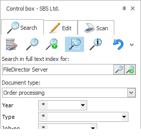
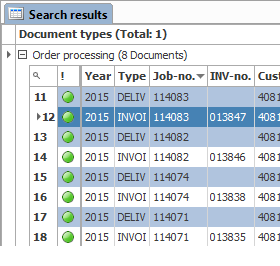
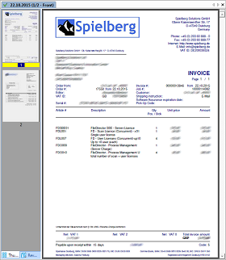

<div id="productInfo" class="content-width-wrap">
    <div id="productTitle">
        <h2>Workflows & Approvals</h2>
        <div>
            <h4>Effortlessly Control The Flow Of Inforamtion</h4>
            <br>

            <div class="content-left">

                <h4>Process Management:</h4>
                <p> Process management is an intelligent way to control your document flow, always controlling the route a document takes through your enterprise. Absence functions and alert thresholds prevent processes from grinding to a halt, and overviews allow for comprehensible tracking as to what process stage a document is at. Customisable messages guide users through the daily flow of information, with system-generated e-mails to flag up documents awaiting attention.
                </p>
                <br>
                <br> </div>
            <div class="content-right content-img"></div>
            <br>

            <p>No company can afford not to be up to the mark when it comes to regulatory matters. And the same applies to requirements relating to the security and recording of documents, retention periods and monitoring. FileDirector comes with a range of functions to help you control these processes. Take retention period management in FileDirector, for instance. It automatically checks the period during which a document needs to remain available, and what happens with that document after a specified closed retention period. You have the scope to define the retention period individually and to specify the documents for which this setting is applicable. </p>
            <br>
            <p> All user access is controlled by the FileDirector server, meaning that no user has direct access to the SQl or Oracle database or to the place where the data is stored. Therefore, documents and data can not be changed or deleted outside of FileDirector. Naturally, FileDirector also keeps a log of all activities. Administrators can call up the history at any time to inspect any document activity.
            </p>
            <br>


            <br>
            <div class="content-left content-img">  </div>
            <div class="content-right">
                <h4>Full text search:</h4>
                <p> If documents are indexed as full text, the search takes in the full file content. Full text search can be combined with the index search to refine the accuracy of hits. The search result for a full text search shows the results with the most matches to the search criteria listed first. </p>
                <br> </div>
            <br>
            <br>
            <div class="content-left">
                <h4>
                    Search results:</h4>
                <p> The search result list is a flexible and high-performance tool. The user can define the format of the list. The list can also be restricted by used index columns to filter hits by selecting a specific field content. </p>
                <br>
                <p> The search list can be used to check out documents for processing, copying, sending as an email or for processes (such as approving invoices) or other activities. Naturally, it is also possible to further process documents offline at a local level. </p>
            </div>
            <div class="content-right content-img">  </div>
            <br>
            <br>
            <div class="content-left content-img">  </div>
            <div class="content-right">
                <h4>Document display:</h4>
                <p> Document display via a miniaturised view or in original size offers ultimate flexibility for display. If preferred, display modes can also be combined. From the miniaturised view, it is possible to send pages for printing, mailing, storage or copying. Earlier versions of the document are available under a separate tab. </p>
                <br>
                <p> In addition, users can rotate, enlarge or reduce display size, can display several pages or several documents simultaneously, and can also opt for full-screen document display. </p>
                <br> </div>
        </div>
